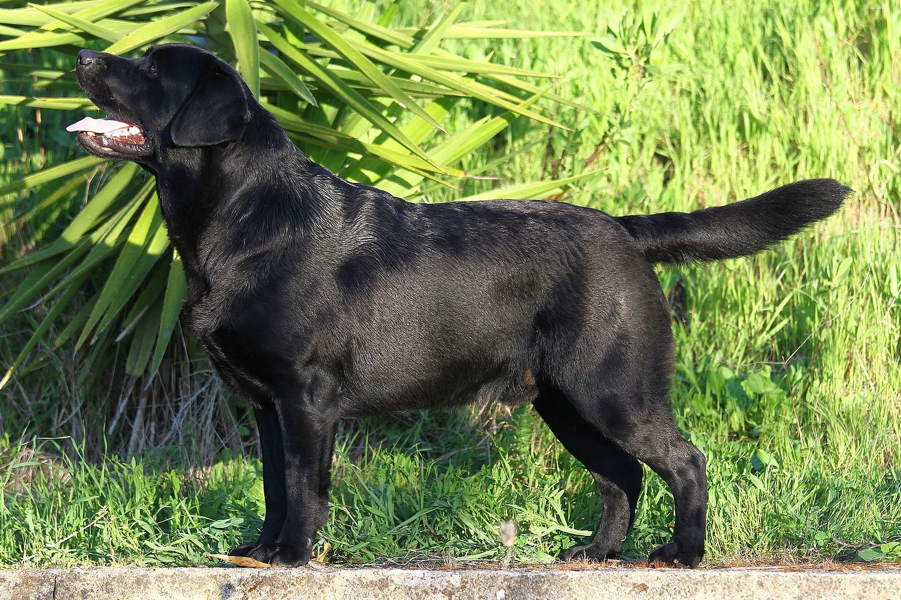

Labrador

Diese Rasse gilt als sehr aktiv, intelligente und tollen gerne mit ihren Haltern herum.
Sie möchten gerne der Freund von allen sein. Sie können sehr gut mit Kindern umgehen und sind gute Wachhunde.
Labradors brauchen eine grosse Hundehütte, welche vom Boden absteht. Sie brauchen jeden Tag 30min auslauf und benötigen nicht besonders viel Fellpflege.